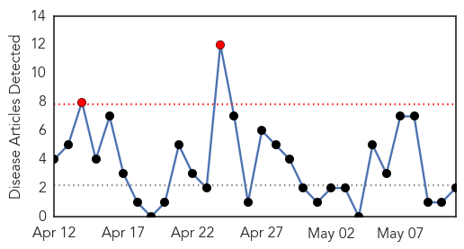

Pertussis
30-Day Web Trend
5 alerts, 0 warnings
30-Day Twitter Trend
0 alerts, 0 warnings

Article Locations
Article Confidences

Top Articles:
Top Tweets:
-
No tweets found for May 11, 2015
Hepatitis
30-Day Web Trend
2 alerts, 0 warnings

30-Day Twitter Trend
0 alerts, 0 warnings

Article Locations
Article Confidences
Top Articles:
Top Tweets:
-
No tweets found for May 11, 2015